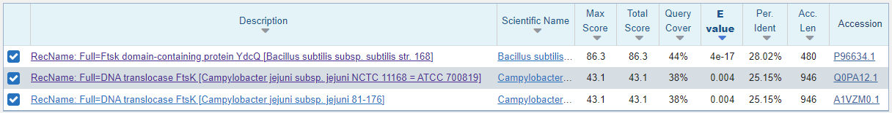
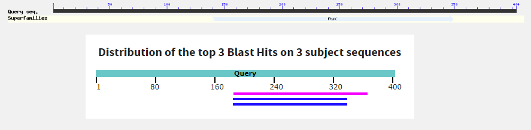
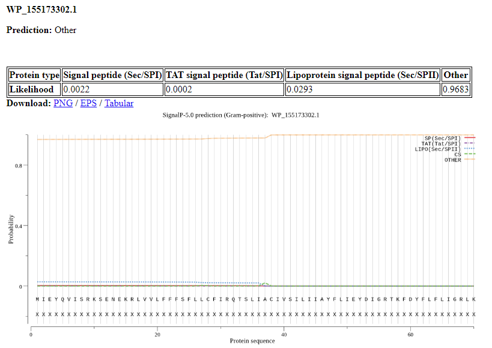
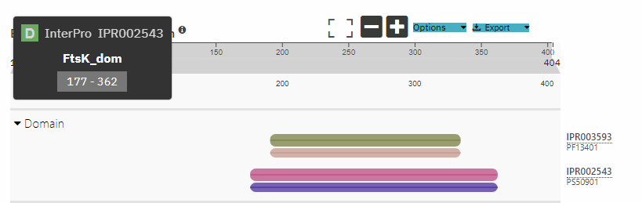
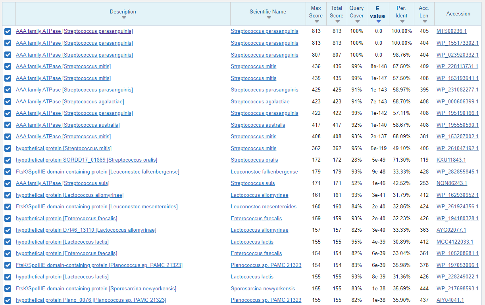
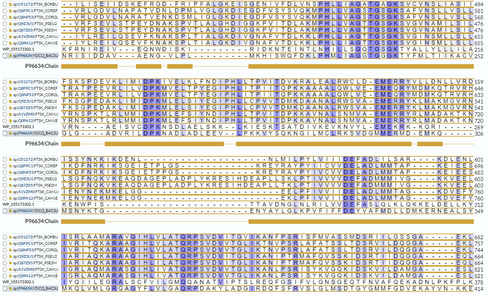
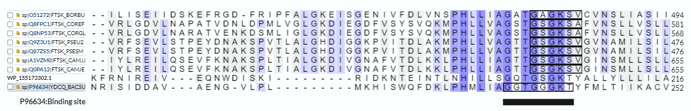
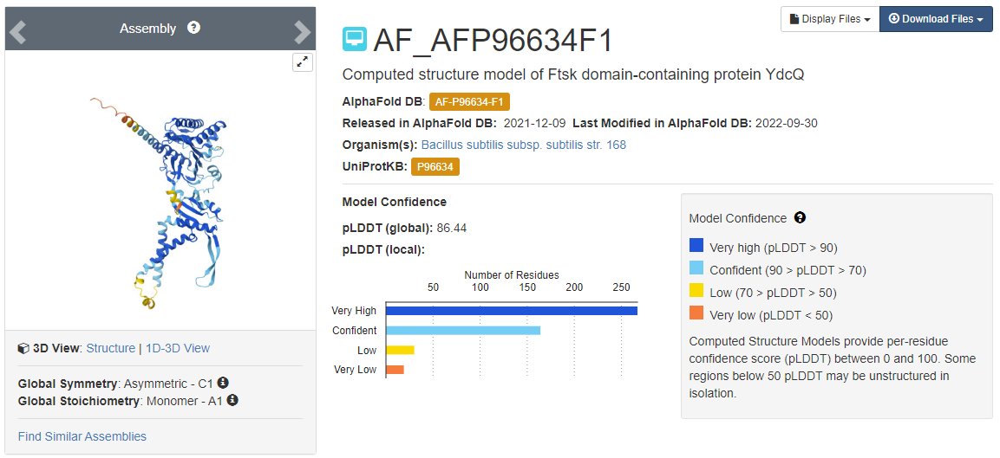
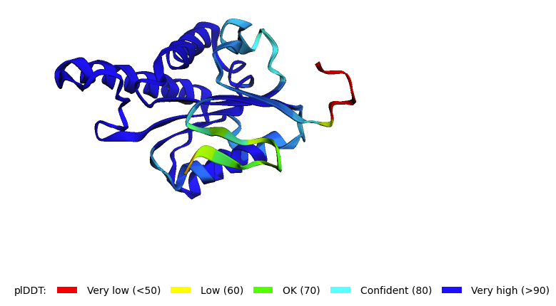

S25#
Avtor: Lena in Kogoj
Datum izdelave: 2023-05-26
Koda seminarja: S25
Vhodni podatek#
Zaporedje:
>S25
IQIELAIDNYNILKEFDFSPIFKGYRQMRVIDTIGRESIIFELEKVDYDRQFKFKNIREI
VEQNWDISKIRIDKNTEINTLNHILLSGQTGSGKTYALLYLLLILAVRNA
Rezultati analiz#
Identifikacija#
Protein: ATPaza družine AAA (AAA family ATPase)
Organizem: Streptococcus parasanguinis; gre za Gram pozitivno bakterijo, ki prebiva v človeški ustni votlini
Identifikacija: Identifikacija je bila narejena z uporabo NCBI BLAST, varianta blastp.
Tabelarični prikaz zadetkov:

Značilna podobnost je bila najdena za celotno zaporedje (100 %), identičnost mojega zaporedja z najdenimi zadetki je visoka (> 99 % identičnost), potencialna naključnost ujemanja je majhna (E-vrednost < 1e-67). Z veliko verjetnostjo lahko zaključim, da je koda zapisa mojega proteina v bazi GenBank WP_155173302.1.
Aminokislinsko zaporedje:
>WP_155173302.1 AAA family ATPase [Streptococcus parasanguinis]
MIEYQVISRKSENEKRLVVLFFFSFLLCFIRQTSLIACIVSILIIAYFLIEYDIGRTKFDYFLFLIGRLK
LERQLMNAKIYVRLNSRKTGNIYVKLPKIHILRQSEFKIWIQIELAIDNYNILKEFDFSPIFKGYRQMRV
IDTIGRESIIFELEKVDYDRQFKFRNIREIVEQNWDISKIRIDKNTEINTLNHILLSGQTGSGKTYALLY
LLLILAVRNAEISVCDPKNSDLAELSKKLKIESKTSATDIVKEVKNVYLEMEKRKKQRIKENWPISTTAV
DNGLNLRILVVDEFASLQLKLQKKELDELLKYIYQIILEGRALSCFVILGMQQANATVIPTSLREQFGSI
FVLGNSGEQTFNVAFQEKADNLPKFPLKAGEGWLVQNTDIEPKFVRFPFLEFLI
Potencialna funkcija proteina:
v splošnem so funkcije ATPaz družine AAA naslednje: replikacija DNA, degradacija proteinov, fuzija membran, biogeneza peroksisimov, signalna transdukcija, regulacija izražanja genov
Splošna karakterizacija#
Za zapis GenBank WP_155173302.1 ni na voljo pripisov glede lastnosti proteina, zato so mi bila v pomoč dobro anotirana zaporedja proteinov z aminokislinskim zaporedjem, podobnim aminokislinskemu zaporedju identificiranega proteina.
Lokalizacija#
Z iskanjem z blastp (privzete nastavitve) po zbirki Uniprot/SwissProt (dobro anotirani zapisi) z zaporedjem WP_155173302.1 lahko identificiramo 3 podobne (homologne) proteine, dva od njih sta DNA translokazi FtsK (mislim, da gre v resnici za dva zapisa za enak protein, saj so dolžina, organizem in ime proteina v obeh zapisih enaki), tretji (tisti, z najvišjo identičnostjo) pa domeno Ftsk vsebuje:

Zadetki pokrivajo zaporedje nekje od 180 pa do 350 aminokislinskega ostanka:

Najbolj podobno (identičnost v poravnanem delu je še vedno dokaj nizka - 28 %, obsega pa 44 % iskalnega zaporedja, hkrati pa je E-vrednost dokaj nizka) je zaporedje v zapisu Uniprot P96634; gre za proitein YdcQ s Ftsk domeno (Ftsk domain-containing protein YdcQ) iz organizma Bacillus subtilis. Za ta protein je pripisano, da se nahaja v celični membrani, in sicer jo dvakrat prečka (vsebuje dve transmembranski regiji). Obsega 480 aminokislinskih ostankov.
Signalni peptid#
Da bi našla signalni peptid v neanotiranem proteinu WP_155173302.1 sem uporabila SignalP - 5.0. Z ozirom na rezultat iskanja lahko z veliko verjetnostjo trdim, da moj protein nima signalnega peptiga.
Prikaz iskanja signalnega peptida:

Glede na pripise na UniProtu signalnega peptida nima niti anotiran protein P96634, ki je mojemu proteinu homolog.
Funkcija#
Iskanja funkcije svojega proteina WP_155173302.1 sem se lotila s pomočjo anotiranega proteina P96634. Za ta protein, kljub temu, da je anotiran, v UniProtu ni veliko pripisov glede njegove funkcije, vsebuje pa FtsK domeno (med 217. in 399. aminokislinskim ostankom). Zato sem z zaporedjem P96634 preverila zadetke v bazi InterPro in tem identificirala domeno FtsK.
Zadetki v InterPro za P96634:

V InterPro sem nato poiskala opis najdene domene - FtsK domain. Gre za hidrofilno domeno, ki se nahaja v citosolu, njena funkcija pa je povezana s translokacijo DNA ob hidrolizi ATP. In res protein P96634 med 234. in 241. aminokislinskim ostankom vsebuje vezavno mesto za ATP.
Da bi se prepričala, da to domeno vsebuje tudi neanotiran protein WP_155173302.1, sem tudi tega poiskala v bazi InterPro in našla sledeče:

Med 177. in 362. aminokislinskim ostankom tudi neanotiran protein WP_155173302.1 vsebuje domeno Ftsk in torej deluje kot DNA translokaza - protein, ki s kemično energijo, ki jo pridobi s hidrolizo ATP, premika DNA, kar je zelo pomembno med celično delitvijo.
Post-translacijske modifikacije#
Anotiran protein P96634 ne vsebuje nobenih post-translacijskih modifikacij, kar je bilo za pročakovati, saj se nahaja v bakteriji. Za to skupino organizmov je značilno, da proteini ne vsebujejo post-translacijskih modifikacij. Lahko zaključimo, da tudi naš protein (WP_155173302.1) post-translacijskih modifikacij ne vsebuje.
Izražanje proteina v rekombinantni obliki#
Ker gre za bakterijski protein, je najbolj smiselno, da se ga izrazi v bakterijskem ekspresijskem sistemu. Verjetno ne bi bilo nič narobe, če bi ga poskusili izraziti tudi v evkariontskem ekspresijskem sistemu, vendar je delo z bakterisjkim ekspresijskim sistemom mnogo lažje. Najbolj smiselno je izraziti celotni protein, čeprav ima encimsko funkcijo zgolj domena FtsK, saj je preostanek proteina verjetno pomemben za strukturo proteina (njegovo pravilno zvijanje in lokalizacijo v celici - pritrditev na membrano) in posledično za njegovo funkcijo.
Homologi, ortologi#
Iskanja homologov sem se lotila z blastp, in sicer z zaporedjem WP_155173302.1.
Zadetki iskanja:

Prve tri zadetke lahko izvzamemo, ker gre glede na visoko identičnost in dejstvo, da izvirajo iz istega organizma, verjetno za več zapisov za en in isti protein. Četrti zadetek bi lahko bil ortolog (en protein v različnih organizmih). Gre prav tako za ATPazo družine AAA, izvira pa iz drugega organizma - Streptococcus mitis.
Z reverznim blastom sem preverila, ali gre res za ortologa. To sem naredila tako, da sem z zaporedjem, ki se skriva na GenBank pod WP_153193941.1 iz Streptococcus mitis iskala z blastp podobna zaporedja, vendar sem se pri iskanju omejila na izvorni organizem - Streptococcus parasanguinis.

Iz tega lahko vidimo, da je ATPaza družine AAA iz organizma Streptococcus mitis zelo verjetno ortolog mojemu proteinu WP_155173302.1 iz Streptococcus parasanguinis. To lahko zaključimo kljub temu, da je pri reverznem blastu moj specifičen protein WP_155173302.1 šele peti zadetek, saj ima pri vseh zapisih protein enako ime (ATPaza družine AAA), majhna razlika je zgolj v dolžinah aminokislinskega zaporedja, kar verjetno pomeni, da gre za različne zapise za enak protein, možno pa je tudi, da je kateri od zadetkov pripisan napačnemu organizmu, kar se zna zgoditi pri delu z metagenomskimi zaporedji.
Seveda WP_153193941.1 iz Streptococcus mitis ni nujno edini ortolog WP_155173302.1 iz Streptococcus parasanguinis. Tudi nadaljnji zadetki (npr. ATPaza družine AAA iz Streptococcus australis ali Streptococcus agalactiae) bi lahko predstavljali ortologa, vendar teh zadetkov nisem preverila z reverznim blastom.
Težava je, da noben od zadetkov iskanja homologov z velikim procentom identičnosti ni anotiran, zato v UniProtu ne najdem njihove funkcije, modifikacij, regulacije, aktivnega mesta ipd. teh proteinov. Zapis zanje v UniProtu namreč sploh ne obstaja. Kot že rečeno, je največja stopnja identičosti 28%, kar sploh ne dosega meje 30%, nad katero lahko brez dvoma rečemo, da gre za homologa.
Za iskanje ohranjenosti regij med homologi sem izvedla blast v UniProtu z neanotiranim proteinom WP_155173302.1 po zbirki UniProt/SwissProt. Z najdenimi zadetki sem izvedla poravnano, vključno z WP_155173302.1 in ugotovila, da je največja ravno ohranjenost FtsK domene (največja ohranjenost pomeni največji delež ujemanja aminokislinskih ostankov), ki se na neanotiranem proteinu WP_155173302.1 nahaja med 177. in 362. aminokislinskim ostankom. To je smiselno, saj se navadno ohranja del proteina, ki je ključen za funkcijo tega proteina, kar je ravno FtsK domena.
Prikaz ohranjenosti FtsK:

Funkcija in encimska aktivnost#
Kot sem že omenila, je funkcija proteina transport DNA, za kar je potrebna energija, ki jo protein dobi s hidrolizo ATP. Protein mora torej nekje imeti vezavno mesto za DNA, kjer hkrati pride tudi do hidrolize ATP. Ker protein WP_155173302.1 ni anotiran, sem se iskanja vezavnega mesta za ATP lotila s pomočjo poravnave z anotiranim zaporedjem P96634, kjer je vezavno mesto za ATP označeno, in sicer se nahaja med 234. in 241. mestom. Da je vazavno mesto za ATP hkrati tudia aktivno mesto tega proteina, sem sklepala na podlagi dejstva, da aktivno mesto ni posebej označeno.
Poravnava s prikzanim aktivnim mestom:

Vezavno mesto se na proteinu WP_155173302.1 nahaja med 196. in 204. aminokislinskim ostankom. Poravnava kaže, da je zelo ohranjeno glede na anotiran protein, razlika je v dveh od osmih aminokislinskih ostankov.
Ohranjenost vezavnega mesta za ATP
Če pogledamo ohranjenost aktivnega mesta za ATP, vidimo, da sta dejansko najbolj sorodna naš protein WP_155173302.1 in anotiran protein P96634, ki ga predlaga blastp, saj je vezavno mesto za ATP najbolj ohranjeno. Pri ostalih zadetkih, pri katerih se FtsK domena sicer ujema v veliki meri, opazimo, da se vezavno mesto ujema zgolj delno z WP_155173302.1. Vezavno mesto je tudi delno zamaknjeno.
Prikaz ohranjenosti vezavnega mesta:

Interakcije#
Iskanja interakcij neanotiranega proteina WP_155173302.1 sem se lotila s pomočjo anotiranega proteina P96634. V zbirki interakcij String protein P96634, ki je v tej zbirki shranjen pod imenom ydcQ, še nima ekperimentalno dokazanih strukturnih interakcij z ostalimi proteini (iskala sem po delu zbirk, kjer so zabeleženi eksperimentalni podatki (‘Experiments’) in zadetki iz ostalih zbirk interakcij (‘Databases’)).
Prikaz zadetkov v zbirki String (‘Experiments’ in ‘Databases’):

Če iskanje razširim še na del zbirke, kjer so zabeleženi še rezultati omembe mojega proteina in nekega drugega proteina v enem članku (‘Textmining’), dobim več možnih povezav med proteini. To bi lahko pomenilo, da je moj protein z ostalimi povezan funkcijsko.
Prikaz zadetkov v zbirki String (‘Textmining’):

Strukturna katakterizacija#
AlphaFold model#
Niti moj neanotiran protein WP_155173302.1 niti anotiran homolog P96634 nimata eksperimentalno določene strukture. Za anotiran homolog P96634 sem v zbirki PDB našla z AlphaFoldom določen model strukture - AF_AFP96634F1.
Prikaz modela strukture homologa P96634:

Sama sem določila pripraviti tri AlphaFold modele:
AlphaFold model svojega celotnega proteina WP_155173302.1
AlphaFold model njegovega funkcijsko pomembnega topnega dela. Tega sem našla tako, da sem pogledala poravnavo z anotiranim homolgom P96634, za katerega je v UniProtu zapisano, da se njegova druga transmembranska regija konča na 91. aminokislinskem ostanku. V poravnavi vidim, da se 92. aminokislinski ostanek anotiranega proteina (prvi aminokislinski ostanek v citosolu) poravna z 59. aminokislinskim ostankom mojega proteina (fenilalanin - tudi v anotiranem zaporedju se na tem mestu nahaja fenilalanin). V AlphaFold sem torej vnesla aminokislinsko zaporedje neanotitranega proteina od 59. aminokislinskega ostanka naprej, da sem dobila model strukure topnega, funkcijsko pomembnega dela svojega proteina.
AlphaFold domene FtsK, ki se v proteinu WP_155173302.1 nahaja med 177. in 362. aminokislinskim ostankom.
Prikaz modela strukture celotnega neanotiranega proteina:

Prikaz modela strukture topnega (citosolnega) dela neanotiranega proteina:

Prikaz modela strukture domene FtsK:

Če primerjam model strukture celotnega proteina z zgolj topnim, citosolnim delom oziroma domeno FtsK, vidim, da AlphaFold z veliko gotovostjo (> 90, modra barva) napove ravno citosolni del, ki je tudi funcijsko najpomembnejši, saj vsebuje domeno FtsK, ter večino domene FtsK. Pri napovedi strukture domene FtsK se vseeno pojavi nekoliko več manj zaneslivo določenih strukturnih regij. Rekla bi, da je to zaradi tega, ker AlphaFold ne ve, da določa zgolj eno domeno, ki je vpeta v celoten protein, in zato iz danega zaporedja sestavi najbolj smiselen celovit in samostojen hipotetičen protein.
Superpozicija s homologom#
Da sem ugotovila strukturne podobnosti med svojim proteinom WP_155173302.1 in njegovim anotinarim homologom P96634, sem storila sledeče:
Primerjala sem model svojega proteina WP_155173302.1 z modelom anotiranega homologa P96634, eksperimentalnih podatkov namreč nimam na voljo. Primerjavo sem izvedla s pomočjo poravnave obeh modelov v programu Chimera.
Da bi lažje ugotovila, kateri del strukture se je najbolje ohranil, sem naredila tudi superpozicijo modela anotiranega homologa P96634 zgolj z modelom funkcijsko pomembnega topnega, citosolnega dela proteina WP_155173302.1.
Iz sistega razloga sem naredila še superpozicijo modela anotiranega homologa P96634 z domeno FtsK proteina WP_155173302.1.
Prikaz poravnave modela proteina WP_155173302.1 (modro) z modelom anotiranega homologa P96634 (rjavo):¸

Prikaz poravnave modela topnega in funkcijsko pomembnega citosolnega dela proteina WP_155173302.1 (modro) z modelom anotiranega homologa P96634 (rjavo):
Prikaz poravnave modela domene FtsK proteina WP_155173302.1 (modro) z modelom anotiranega homologa P96634 (rjavo):

Če primerjam vse tri poravnave, opazim, da se modela najbolj prekrivata ravno v domeni FtsK, ki se je očitno evolucijsko najbolje ohranila zaradi svoje funkcije, čeprav je tudi prekritje anotiranega proteina P96634 s celotnim citosolnim delom proteina WP_155173302.1 kar veliko. To je verjetno zato, ker je celotna struktura oziroma zvitje strukturne regije pomembno za funkcijo proteina.